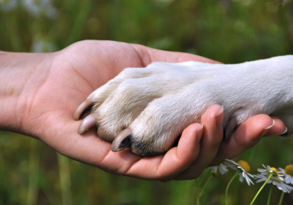
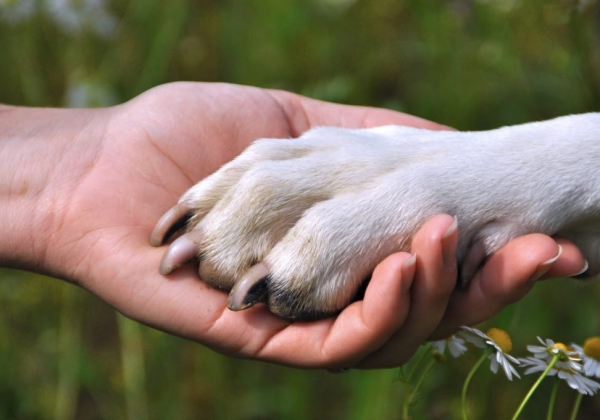

Conheça alguns de nossos amiguinhos
clique abaixo para conhecer melhor !
Doações
A PET CONECTA tem a missão de promover a adoção responsável de todos
os animais domésticos e de cativeiro, para que encontrem lares seguros, cheios de amor e
carinho,
evitando o abandono e garantindo uma vida digna a eles.
Com este serviço, também teremos o controle e acompanhamento de animais adotados,
a quantidade por regiões, sexo, e idade, dando um panorama real dos animais que encontraram
um lar em nosso meio.

Doações
A PET CONECTA tem a missão de promover a adoção responsável de todos os animais domésticos e de cativeiro, para que encontrem lares seguros, cheios de amor e carinho, evitando o abandono e garantindo uma vida digna a eles.
Com este serviço, também teremos o controle e acompanhamento de animais adotados, a quantidade por regiões, sexo, e idade, dando um panorama real dos animais que encontraram um lar em nosso meio.
